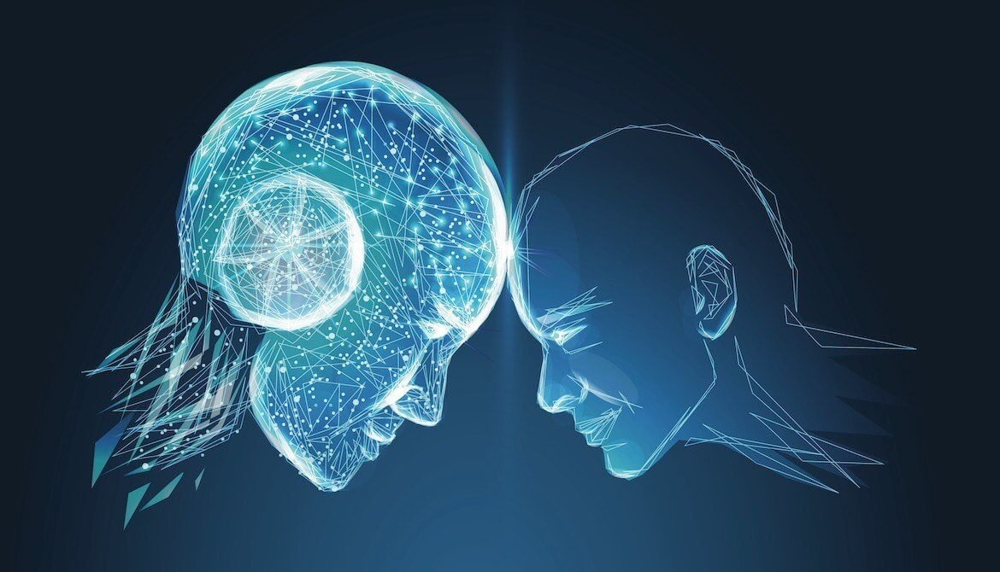
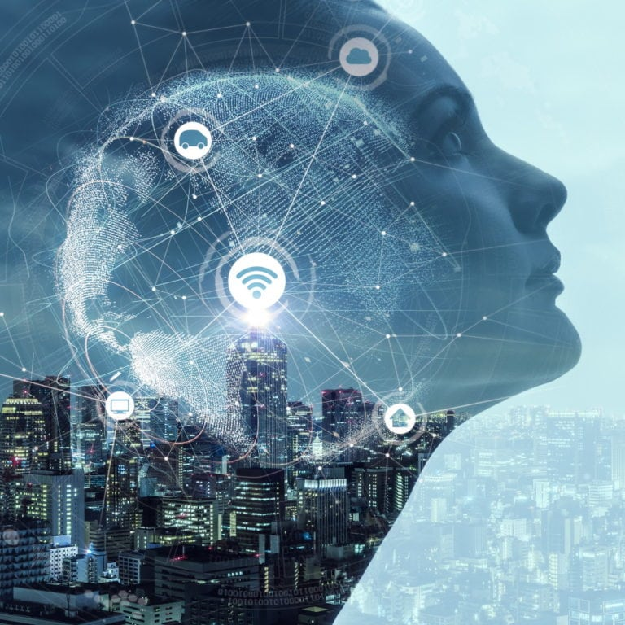

L'intelligence artificielle : Peut-elle vraiment surpasser l'intelligence humaine ?
Introduction :
 L'intelligence artificielle (IA) est un sujet de débat passionnant et parfois controversé. Alors que les systèmes d'IA deviennent de plus en plus sophistiqués, la question se pose : ces machines peuvent-elles réellement surpasser l'intelligence humaine ? Cet article se penche sur les avancées récentes de l'IA, les défis éthiques qu'elle soulève, et ce que cela signifie pour l'avenir de notre société.
Première partie : Les avancées technologiques en intelligence artificielle
L'IA a fait des progrès considérables au cours des dernières décennies, notamment grâce à des algorithmes d'apprentissage automatique et d'apprentissage profond. Ces technologies permettent aux machines d'apprendre à partir de données, d'analyser des informations complexes et de prendre des décisions de manière autonome. Des entreprises comme Google et OpenAI développent des systèmes d'IA capables de réaliser des tâches allant de la reconnaissance d'images à la génération de texte.
L'IA et ses Limites : Vers une Intelligence Générale ?
Ces systèmes d'IA surpassent déjà les capacités humaines dans des domaines spécifiques, comme les jeux de stratégie ou le traitement de grandes quantités de données. Cependant, la question de la généralisation de l'IA — la capacité à exceller dans des domaines variés — reste un défi. Les recherches se concentrent sur des architectures d'IA qui imitent le fonctionnement du cerveau humain, mais nous sommes encore loin d'une IA véritablement générale.
Deuxième partie : Les implications futures de l'IA
Les implications de l'IA dans notre société sont vastes. Alors que l'IA continue d'évoluer, elle pourrait transformer des secteurs entiers, de la santé à la finance en passant par le transport. Cependant, cette évolution s'accompagne de préoccupations concernant la perte d'emplois et la nécessité de requalifier les travailleurs. Les gouvernements et les entreprises doivent collaborer pour anticiper ces changements et mettre en place des stratégies d'accompagnement.
Les impacts sociétaux de l'intelligence artificielle
De plus, le développement d'une IA autonome soulève des questions sur la sécurité et la protection des données. Les systèmes d'IA, en tant qu'entités de plus en plus influentes, doivent être réglementés pour éviter des abus potentiels. La recherche sur des systèmes d'IA explicables est essentielle pour garantir que les décisions prises par les machines soient transparentes et compréhensibles par les humains.
L'IA a également un impact profond sur nos interactions sociales et notre quotidien. Les assistants virtuels, comme Siri et Alexa, modifient la manière dont nous interagissons avec la technologie. De plus, l'IA peut influencer nos choix, nos préférences et même nos comportements à travers la personnalisation des contenus. En tant que société, nous devons être conscients de ces influences et en discuter ouvertement pour nous assurer que l'IA sert les intérêts de tous.
Conclusion :
Alors que l'intelligence artificielle continue de progresser, il est crucial d'aborder les défis et les opportunités qu'elle présente.
Les avancées technologiques pourraient offrir des solutions innovantes à des problèmes complexes, mais elles nécessitent également une réflexion éthique approfondie.
En équilibrant innovation et responsabilité, nous pourrions façonner un avenir où l'IA et l'humanité coexistent de manière bénéfique.
Cependant, ce chemin n'est pas sans embûches. La rapidité avec laquelle l'IA évolue soulève des questions importantes concernant la vie privée, la sécurité et l'équité. Par exemple, l'utilisation de l'IA dans la surveillance peut offrir des avantages en matière de sécurité, mais elle pose également des risques pour la liberté individuelle.